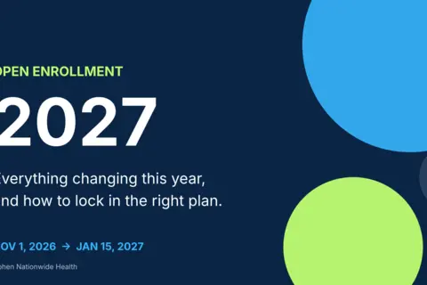

Health Insurance, Explained Simply
Practical guides that help you choose coverage with confidence.
One Plan or Two? Choosing Family Coverage When You Both Have Options
When both spouses have health plan choices, should the family share one plan or split up? Here's a plain-English way to compare and decide for 2027.
Kid Away at College? Make Sure Your Family Plan Travels Too
Is your college student covered far from home? Learn how networks, campus clinics and school plans work so you can pick the right family coverage for 2027.
6 min readBig Life Change This Year? Update Your Coverage for 2027
Married, moved, had a baby or changed jobs in 2026? Here's how to make sure your health coverage fits your life as you plan for 2027.
6 min readBefore You Shop for 2027 Coverage: What to Gather First
A simple prep list of names, doctors, prescriptions, care habits and income estimates to gather before you compare 2027 health insurance plans.
6 min readPremium vs. Total Cost: How to Size Up a Plan's Real Price for 2027
The lowest monthly premium isn't always the cheapest plan. Learn how to estimate what a health plan may really cost you over a full year before you choose.
6 min readBronze, Silver, Gold or Platinum? How to Pick a Plan Level for 2027
Shopping for next year's health plan? Learn what Bronze, Silver, Gold and Platinum really mean and how to match a metal level to your health and budget.
6 min readHealth Insurance for Owner-Operators: What Actually Changes When You Go Independent
Once you own your truck, your health coverage is entirely on you. Here's how owner-operators actually compare private PPO, Marketplace, and short-term options — and what trips people up.
7 min read1099 vs. W2: How Your Pay Structure Changes Your Health Benefits
Same job, different tax classification, completely different benefits picture. Here's what actually changes between a W2 company driver and a 1099 owner-operator.
5 min readCan Owner-Operators Deduct Health Insurance? What the IRS Actually Says
Yes, generally — if you're structured as a sole proprietor. Here's how the self-employed health insurance deduction actually works, the rule that trips people up, and where it goes on your return.
6 min readThe DOT Physical Blood Pressure Rule — and What It Has to Do With Your Health Insurance
A DOT physical certifies you're fit to drive. It pays nothing if you get sick or hurt. Here's exactly where the blood pressure cutoffs come from, and why ongoing care still needs real coverage.
6 min readYour Health Plan Renewal Notice: How to Read It Before You Decide
Renewal notices arrive this time of year. Learn what to check on yours, what auto-renewal really means, and when it makes sense to shop around.
6 min read
Open Enrollment 2027: What Changed, What It Costs, and How to Win the Deadline
Premiums are up, insurers are exiting 20+ states, and the out-of-pocket max just hit $12,000. Here is everything changing for 2027 coverage, with charts, deadlines, and a step-by-step checklist.
5 min readTurning 26: What Happens to Your Health Insurance When You Age Off a Parent's Plan
Aging off a parent's plan at 26? Find out when your coverage actually ends, your real options (including COBRA and the Marketplace), and how to avoid a gap.
6 min readRetiring Before 65: How to Bridge the Gap to Medicare
Retiring before 65 means covering your own health insurance until Medicare starts. Compare COBRA, the Marketplace, a spouse's plan, and private options — and avoid the timing mistakes.
7 min readWhy Private PPO Can Move Faster Than the Marketplace
Open enrollment runs on a calendar. Private PPO plans largely don't. Here's the real trade-off behind the speed difference — and when the Marketplace still wins.
4 min readHealth Insurance 2026
Choosing health insurance in 2026 does not have to feel overwhelming. Learn how to compare Marketplace, employer, private, and short-term coverage based on your budget, doctors, prescriptions, and healthcare needs.
4 min readHow Much Does Health Insurance Actually Cost Without a Subsidy?
No subsidy changes the math completely. Here's what actually drives an unsubsidized premium, how Marketplace and private PPO pricing compare, and how to run your own numbers.
3 min readShort-Term Health Insurance: What It Actually Covers (and Doesn’t)
Short-term health plans are fast and cheap for a reason. Here's exactly what they cover, what they typically exclude, and when they're actually the right tool.
1 min readWhat Is Medical Underwriting? A Plain-English Guide
Medical underwriting decides whether a private health plan will cover you and at what price. Here's exactly what it looks at, how decisions actually get made, and what to expect.
1 min readCan You Get Health Insurance Outside Open Enrollment?
Learn when you may qualify for health coverage outside Open Enrollment through a Special Enrollment Period, Medicaid, employer coverage, or other options.
6 min readHow to Choose the Best Health Insurance Plan for Your Family
Learn how to compare family health insurance using premiums, deductibles, networks, prescriptions, maternity benefits, and out-of-pocket limits.
6 min readHealth Insurance for Self-Employed Individuals: A Practical Guide
Explore health insurance options for freelancers, independent contractors, business owners, and other self-employed professionals.
6 min readPPO vs. HMO Health Insurance: Which Plan Is Better for You?
Learn the difference between PPO and HMO health insurance, including referrals, networks, out-of-network coverage, flexibility, and cost.
6 min readPrivate Health Insurance vs. ACA Marketplace Plans: What Is the Difference?
Compare private health insurance and ACA Marketplace plans, including eligibility, benefits, provider networks, subsidies, and key questions to ask.
6 min readHealth Insurance for 1099 Contractors: What Actually Works
No W-2, no HR department, no group plan — here's how independent contractors actually get covered without overpaying.
6 min readThe Right Time to Switch Off COBRA (It's Earlier Than You Think)
Most people wait until COBRA is about to expire to look at alternatives. Here's why that costs you money every month you wait.
5 min readHow Much Does Small Business Health Insurance Actually Cost in 2026?
Real numbers on group plans, ICHRA, and QSEHRA — and why the 'cheapest' option on paper isn't always the cheapest after tax treatment.
6 min readPrivate PPO vs. ACA Marketplace: What's Actually Different in 2026?
Most people assume ACA and private plans are interchangeable. They're not — and the difference can save or cost you hundreds per month depending on your situation.
6 min readCOBRA Is Costing You More Than You Think — Here's the Alternative
COBRA keeps you insured after leaving a job, but you pay the full group premium plus a 2% admin fee — often 3-4x what you paid while employed.
6 min readThe Self-Employed Guide to Health Insurance
Freelancers and entrepreneurs face unique challenges finding coverage without an employer. Here's every realistic option, explained plainly.
6 min readReady to Get Coverage That Actually Works for You?
Free, no-pressure conversation. Compare every option in one call.